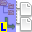
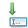
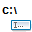
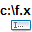

Interne Befehle lassen sich in Kategorien einteilen, und zwar so:
| Tabelle der Befehlskategorien | |
|---|---|
| Kategorie | Beschreibung |
| Diese Befehle gelten für das aktuell ausgewählte Panel, links oder rechts. | |
| Diese Befehle gelten für das linke Panel, unabhängig davon, welches gerade ausgewählt ist. | |
| Diese Befehle gelten für das rechte Panel, unabhängig davon, welches gerade ausgewählt ist. | |
| Diese Befehle gelten für den aktuell ausgewählten Eintrag im aktuell ausgewählten Panel. Dazu gehören Vorgänge wie Betrachten, Kopieren, Verschieben, Umbenennen, Löschen, Packen, Entpacken, Teilen usw. Das sind die Befehle, die eine direkte Auswirkung auf Ihre Dateien haben können. |
|
| Öffnet Optionen und die Konfiguration von Double Commander. | |
| Betrifft unmittelbar das Rechnernetz. | |
| Die unvermeidliche Kategorie für Befehle, bei denen wir nicht wussten, wohin sie gehören! Wir haben uns bemüht, nicht zu viele Befehle in diese Kategorie zu legen. |
|
| Wählt die Einträge aus, auf die sich Dateioperationen beziehen. | |
| Austausch zwischen der System-Zwischenablage und den ausgewählten Einträgen. | |
| Wechselt von einem Ordner zum nächsten, um Einträge an ihrem Ort zu erreichen. | |
| Öffnet die integrierten Hilfedateien von Double Commander. | |
| Befehle zum Fenster von Double Commander, zu seinem Aussehen und Verhalten wie bei jedem anderen Programm. | |
| Arbeitet mit der Befehlszeile, zeigt frühere Befehle und hilft beim Aufruf neuer Befehle. | |
| Für Aktionen, die mehr als einen Klick brauchen. Sie öffnen in der Regel ein weiteres Fenster, in dem Double Commander aufwendigere Aufgaben ausführt. | |
| Befehle zur Sichtbarkeit und Darstellung von Dateien, Systemdateien usw. | |
| Arbeitet mit Registerkarten: neue anlegen, von Verzeichnis zu Verzeichnis wechseln usw. | |
| Aktionen zu den Protokolldateien von DC. | |
Hier eine kurze Beschreibung aller internen Befehle.
Für jeden davon werden wir:
Diese Befehle gelten für das aktuell ausgewählte Panel, links oder rechts.
| Kategorie „Aktives Panel“ | ||||||||||||||||||||||||||||||||||||||
|---|---|---|---|---|---|---|---|---|---|---|---|---|---|---|---|---|---|---|---|---|---|---|---|---|---|---|---|---|---|---|---|---|---|---|---|---|---|---|
| Name | Beschreibung | |||||||||||||||||||||||||||||||||||||
|
Ctrl+F1 |
Nur der Name der Einträge. Wenn möglich in mehr als einer Spalte. |
|||||||||||||||||||||||||||||||||||||
|
Ctrl+F2 |
Ein Eintrag je Zeile, mit voreingestellten oder selbst festgelegten Spalten.
Siehe Abschnitt zu den Spalten. |
|||||||||||||||||||||||||||||||||||||
|
Ctrl+Shift+F1 |
Einträge werden als kleine Bilder gezeigt. Wenn möglich in mehr als einer Spalte. |
|||||||||||||||||||||||||||||||||||||
|
Ctrl+B |
Durchsucht alle Unterverzeichnisse des aktuellen Verzeichnisses im Panel und zeigt alle Dateien in einer Liste. Ein erneuter Aufruf kehrt zur normalen Darstellung zurück.
|
|||||||||||||||||||||||||||||||||||||
|
Ctrl+Shift+B |
Wie der Befehl cm_FlatView ohne Parameter, aber nur für ausgewählte Dateien und Ordner. | |||||||||||||||||||||||||||||||||||||
|
Ctrl+Q |
Der Inhalt des ausgewählten Eintrags erscheint im gegenüberliegenden Panel (statt in einem eigenen Fenster). Einzelheiten siehe hier. |
|||||||||||||||||||||||||||||||||||||
|
Ctrl+F3 |
Sortiert Einträge im aktiven Panel nach Name. | |||||||||||||||||||||||||||||||||||||
|
Ctrl+F4 |
Sortiert Einträge im aktiven Panel nach Erweiterung. | |||||||||||||||||||||||||||||||||||||
|
Ctrl+F6 |
Sortiert Einträge im aktiven Panel nach Dateigröße. | |||||||||||||||||||||||||||||||||||||
|
Ctrl+F5 |
Sortiert Einträge im aktiven Panel nach Datum. | |||||||||||||||||||||||||||||||||||||
| Sortiert Einträge im aktiven Panel nach Attributen. | ||||||||||||||||||||||||||||||||||||||
| Kehrt die Sortierung um bei den im aktiven Panel angezeigten Einträgen. | ||||||||||||||||||||||||||||||||||||||
| Öffnet die Laufwerksliste für das aktive Panel. | ||||||||||||||||||||||||||||||||||||||
| Sortiert die angegebene Spalte in der angegebenen Richtung im angegebenen Panel. Die möglichen Parameterwerte stehen in der folgenden Tabelle.
Beispiel: "cm_UniversalSingleDirectSort panel=active column=size order=descending" Damit werden die Einträge im aktiven Panel nach der Größe sortiert – größere Dateien zuerst. |
||||||||||||||||||||||||||||||||||||||
|
Alt+Shift+Enter |
Berechnet die Gesamtgröße des Inhalts jedes Verzeichnisses im aktuell ausgewählten Panel. | |||||||||||||||||||||||||||||||||||||
Diese Befehle gelten für das linke Panel, unabhängig davon, welches gerade ausgewählt ist.
| Kategorie „Linkes Panel“ | ||||||||||
|---|---|---|---|---|---|---|---|---|---|---|
| Name | Beschreibung | |||||||||
| Im linken Panel nur der Name der Einträge. Wenn möglich in mehr als einer Spalte. |
||||||||||
Im linken Panel ein Eintrag je Zeile, mit voreingestellten oder selbst festgelegten Spalten.
Siehe Abschnitt zu den Spalten. |
||||||||||
| Im linken Panel werden die Einträge als Miniaturansichten gezeigt. Wenn möglich in mehr als einer Spalte. |
||||||||||
 |
Durchsucht alle Unterverzeichnisse des aktuellen Verzeichnisses im linken Panel und zeigt alle Dateien in einer Liste. | |||||||||
| Sortiert Einträge im linken Panel nach Name. | ||||||||||
| Sortiert Einträge im linken Panel nach Erweiterung. | ||||||||||
| Sortiert Einträge im linken Panel nach Größe. | ||||||||||
| Sortiert Einträge im linken Panel nach Datum. | ||||||||||
| Sortiert Einträge im linken Panel nach Attributen. | ||||||||||
| Kehrt die Sortierung um bei den Einträgen im linken Panel. | ||||||||||
|
Alt+F1 |
Öffnet die Laufwerksliste für das linke Panel. | |||||||||
Diese Befehle gelten für das rechte Panel, unabhängig davon, welches gerade ausgewählt ist.
| Kategorie „Rechtes Panel“ | ||||||||||
|---|---|---|---|---|---|---|---|---|---|---|
| Name | Beschreibung | |||||||||
| Im rechten Panel nur der Name der Einträge. Wenn möglich in mehr als einer Spalte. |
||||||||||
Im rechten Panel ein Eintrag je Zeile, mit voreingestellten oder selbst festgelegten Spalten.
Siehe Abschnitt zu den Spalten. |
||||||||||
| Im rechten Panel werden die Einträge als Miniaturansichten gezeigt. Wenn möglich in mehr als einer Spalte. |
||||||||||
| Durchsucht alle Unterverzeichnisse des aktuellen Verzeichnisses im rechten Panel und zeigt alle Dateien in einer Liste. | ||||||||||
| Sortiert Einträge im rechten Panel nach Name. | ||||||||||
| Sortiert Einträge im rechten Panel nach Erweiterung. | ||||||||||
| Sortiert Einträge im rechten Panel nach Größe. | ||||||||||
| Sortiert Einträge im rechten Panel nach Datum. | ||||||||||
| Sortiert Einträge im rechten Panel nach Attributen. | ||||||||||
| Kehrt die Sortierung um bei den Einträgen im rechten Panel. | ||||||||||
|
Alt+F2 |
Öffnet die Laufwerksliste für das rechte Panel. | |||||||||
Diese Befehle gelten für den aktuell ausgewählten Eintrag im aktuell ausgewählten Panel.
Dazu gehören Vorgänge wie Betrachten, Kopieren, Verschieben, Umbenennen, Löschen, Packen, Entpacken, Teilen usw.
Das sind vermutlich die Befehle mit einer direkten Auswirkung auf Ihre Dateien.
| Kategorie „Dateioperationen“ | ||||||||||||||||||
|---|---|---|---|---|---|---|---|---|---|---|---|---|---|---|---|---|---|---|
| Name | Beschreibung | |||||||||||||||||
|
F3 |
Öffnet die Datei im Dateibetrachter.
Der Parameter „mode“ erzwingt den Anzeigemodus (Plugins werden dann ignoriert, den Modus können wir später im Dateibetrachter wechseln). Der Parameter wirkt nur, wenn keine Dateien ausgewählt sind, nur die Datei unter dem Cursor ausgewählt ist oder zusätzlich „cursor=1“ angegeben ist. Die Beschreibung der Modi steht auf dieser Seite. |
|||||||||||||||||
|
F4 |
Öffnet die Datei im Editor (intern oder extern, siehe Werkzeuge > Editor).
Sind mehrere Dateien ausgewählt, wird die erste ausgewählte Datei geöffnet (wie im Dateibetrachter). Die Arbeit mit mehreren ausgewählten Dateien ist derzeit nicht vollständig umgesetzt, deshalb können wir die Auswahl aufheben, „cursor=1“ angeben oder cm_EditNew. |
|||||||||||||||||
|
Shift+F4 |
Legt im aktuellen Verzeichnis eine neue Textdatei an und öffnet sie im Editor (siehe Werkzeuge > Editor) oder öffnet eine vorhandene Datei (wenn eine Datei dieses Namens schon existiert). Wir können den vollständigen Dateinamen (mit Pfad) eingeben; die Datei wird dann im angegebenen Verzeichnis angelegt. Der Befehl legt keine neuen Ordner im Pfad an. |
|||||||||||||||||
|
F5 |
Kopiert Einträge von der Quelle zum Ziel.
Beispiel: "cm_Copy confirmation=1" fordert Sie zur Bestätigung des Kopierens auf, unabhängig von der Einstellung zur Bestätigung von Kopiervorgängen. |
|||||||||||||||||
| Kopiert Einträge von der Quelle zum Ziel, ohne nach einer Bestätigung zu fragen. | ||||||||||||||||||
|
Shift+F5 |
Kopiert Einträge im selben Verzeichnis. | |||||||||||||||||
|
F6 |
Benennt Einträge um oder verschiebt sie.
Beispiel: "cm_Rename confirmation=1" fordert Sie zur Bestätigung des Umbenennens oder Verschiebens auf, unabhängig von der Einstellung zur Bestätigung von Verschiebevorgängen. |
|||||||||||||||||
| Benennt Einträge um oder verschiebt sie, ohne nach einer Bestätigung zu fragen. | ||||||||||||||||||
|
F2, Shift+F6 |
Datei umbenennen im selben Verzeichnis. Ein Parameter ist verfügbar(Alpha-Version):
|
|||||||||||||||||
|
F7 |
Legt ein neues Verzeichnis an. | |||||||||||||||||
|
F8, Del |
Löscht den ausgewählten Eintrag in den Papierkorb oder endgültig. Das Löschen in den Papierkorb ist möglicherweise nicht auf allen Plattformen verfügbar. Beim Löschen in den Papierkorb und beim endgültigen Löschen erscheint eine jeweils andere Bestätigung.
|
|||||||||||||||||
|
Alt+Del |
Löscht die Datei sicher. | |||||||||||||||||
|
Alt+F5 |
Packt Einträge in ein Archiv.
|
|||||||||||||||||
|
Alt+Shift+F9 |
Prüft die Unversehrtheit des Inhalts der ausgewählten Archivdatei. Ist der Archivinhalt beschädigt, wird eine Fehlermeldung ausgegeben. |
|||||||||||||||||
|
Ctrl+PgDn |
Ist ein Verzeichnis ausgewählt, wird es geöffnet und sein Inhalt angezeigt. Ist eine Datei ausgewählt, wird sie unabhängig von der Erweiterung anhand des erkannten Inhalts als Archiv zu öffnen versucht (siehe ID-Konfiguration auf einer anderen Hilfeseite). |
|||||||||||||||||
|
Alt+F9 |
Entpackt ein oder mehrere ausgewählte Archive.
|
|||||||||||||||||
| VFS-Liste öffnen. Ein Parameter ist verfügbar(Alpha-Version):
|
||||||||||||||||||
|
Alt+Enter |
Zeigt die Eigenschaften des Eintrags an (Größe, Datum, Attribute usw.). | |||||||||||||||||
| Passt Eigenschaften des Eintrags an, etwa Erstelldatum, Änderungsdatum, letztes Zugriffsdatum und Dateirechte. | ||||||||||||||||||
|
Ctrl+Z |
Erstellt oder bearbeitet den Kommentar einer Datei oder eines Verzeichnisses. | |||||||||||||||||
|
Shift+F10 |
Zeigt das Kontextmenü für Dateien und Ordner. Unter Windows zeigt Double Commander das System-Kontextmenü (wie im Windows-Explorer), unter anderen Betriebssystemen ein eigenes Kontextmenü mit den üblichen Aktionen.
|
|||||||||||||||||
|
Enter |
Öffnet die Datei oder das Programm unter dem Cursor. Dabei kann das zugeordnete Programm aus der Konfiguration der Dateizuordnungen verwendet werden. |
|||||||||||||||||
|
Ctrl+Alt+Enter |
Startet für die ausgewählte Datei ein Programm aus den Dateizuordnungen des Systems. Für den Aufruf kann zusätzlich ein einzelner Parameter angegeben werden. |
|||||||||||||||||
| Erstellt einen symbolischen Link auf eine Datei oder ein Verzeichnis. | ||||||||||||||||||
| Erstellt einen harten Link. | ||||||||||||||||||
| Öffnet den Dialog zum Teilen von Dateien. | ||||||||||||||||||
| Fügt mehrere Teildateien zu einer einzigen Datei zusammen. | ||||||||||||||||||
| Berechnet die Dateiprüfsumme (MD5, SHA1 usw.). | ||||||||||||||||||
| Prüft die Prüfsumme (MD5, SHA1 usw.). | ||||||||||||||||||
Öffnet Optionen und die Konfiguration von Double Commander.
| Kategorie „Konfiguration“ | ||||||||||||||||||||||||||||||||||||
|---|---|---|---|---|---|---|---|---|---|---|---|---|---|---|---|---|---|---|---|---|---|---|---|---|---|---|---|---|---|---|---|---|---|---|---|---|
| Name | Beschreibung | |||||||||||||||||||||||||||||||||||
| Öffnet den Konfigurationsdialog. Der Befehl kennt einen einzelnen Parameter, um direkt zu einem bestimmten Konfigurationsabschnitt zu springen. Hier ist ein Verweis auf die möglichen Parameter. |
||||||||||||||||||||||||||||||||||||
| Öffnet die Konfiguration der Werkzeugleiste. | ||||||||||||||||||||||||||||||||||||
|
Ctrl+Shift+D |
Öffnet die Konfiguration der Verzeichnis-Favoriten. Das entspricht dem Befehl cm_WorkWithDirectoryHotlist mit diesen Parametern: action=config source=%Ds |
|||||||||||||||||||||||||||||||||||
| Öffnet das Fenster zur Konfiguration der „Verzeichnis-Favoriten“. Mit den Parametern legen Sie fest, welche Aktionen für die Favoriten ausgeführt werden.
Beispiel: "cm_WorkWithDirectoryHotlist action=addboth" Damit werden beide aktuellen Verzeichnisse des aktiven und des inaktiven Panels als Quelle bzw. Ziel in die Verzeichnis-Favoriten aufgenommen. |
||||||||||||||||||||||||||||||||||||
| Öffnet die Konfiguration. | ||||||||||||||||||||||||||||||||||||
| Öffnet die Einstellungen zu Verzeichnis-Registerkarten. | ||||||||||||||||||||||||||||||||||||
| Öffnet die Konfiguration der Registerkarten-Favoriten. | ||||||||||||||||||||||||||||||||||||
| Öffnet die Konfiguration der Baumansichtsmenüs. Hier legen wir fest, für welchen Befehl die Auswahl standardmäßig als Baumansichtsmenü erfolgen soll. | ||||||||||||||||||||||||||||||||||||
| Öffnet die Konfiguration der Farben für die Oberfläche des Baumansichtsmenüs. | ||||||||||||||||||||||||||||||||||||
| Öffnet die allgemeinen Optionen zur Dateisuche. | ||||||||||||||||||||||||||||||||||||
| Öffnet die Konfiguration der Tastenkürzel. | ||||||||||||||||||||||||||||||||||||
| Speichert den aktuellen Zustand und die Position des Hauptfensters von DC. |
||||||||||||||||||||||||||||||||||||
| Speichert alle aktuellen Einstellungen und den Verlauf, so als würden Sie das Programm schließen und wiederherstellen. Das ist hilfreich, wenn Sie DC längere Zeit verwendet haben und den aktuellen Zusammenhang sichern möchten, falls das System abstürzt und Sie den Verlauf beim nächsten Start von DC nicht verlieren wollen. |
||||||||||||||||||||||||||||||||||||
| Öffnet die Konfigurationsseite für die externen Packprogramme. | ||||||||||||||||||||||||||||||||||||
| Öffnet die Konfigurationsseite für die Kurzinfos. | ||||||||||||||||||||||||||||||||||||
| Öffnet die Konfiguration der Plugins. | ||||||||||||||||||||||||||||||||||||
| Mit diesem Befehl lassen sich Plugins einfach hinzufügen. Zwei Wege werden unterstützt: 1) Wählen Sie eine Plugin-Datei. Double Commander erkennt den Typ (WCX, WDX, WFX, WLX oder DSX) automatisch, öffnet den passenden Einstellungsabschnitt und trägt das Plugin in die Liste ein. 2) Wählen Sie das Archiv, das das Plugin und eine besondere Datei enthält: pluginst.inf (die Plugin-Datei und pluginst.inf muss im Stammverzeichnis des Archivs liegen): der Inhalt des Archivs wird in das passende Verzeichnis entpackt, das Plugin wird in die Einstellungen eingetragen und Double Commander öffnet den zugehörigen Abschnitt. Liegen die Einstellungen im Benutzerprofil, verwendet Double Commander den Ordner „plugins“ im Verzeichnis des Benutzers:
Hinweis: Beim ersten Weg müssen die Dateien vorher an einen passenden Ort gelegt werden. Double Commander meldet dann aber einen Fehler, wenn das Plugin nicht geladen werden konnte (zum Beispiel weil dem Betriebssystem nötige Bibliotheken fehlen). Der Dateiname kann als Parameter übergeben werden. |
||||||||||||||||||||||||||||||||||||
Betrifft unmittelbar das Rechnernetz.
| Kategorie „Netzwerk“ | |
|---|---|
| Name | Beschreibung |
| Netzwerkverbindung herstellen. | |
| Netzwerkverbindung trennen. | |
| Nur Windows: kopiert Namen mit UNC-Pfad. | |
|
Ctrl+K |
Dieser Befehl verbindet Netzwerkgeräte. Das Verhalten hängt vom Betriebssystem ab:
|
Die unvermeidliche Kategorie für Befehle, bei denen wir nicht wussten, wohin sie gehören!
Wir haben uns bemüht, nicht zu viele Befehle in diese Kategorie zu legen.
| Kategorie „Verschiedenes“ | ||||||||||||||||||||
|---|---|---|---|---|---|---|---|---|---|---|---|---|---|---|---|---|---|---|---|---|
| Name | Beschreibung | |||||||||||||||||||
|
Ctrl+L |
Berechnet den belegten Speicherplatz der ausgewählten Einträge im aktiven Panel. | |||||||||||||||||||
| Startet einen einfachen Leistungstest, der die unterstützten Hash-Funktionen ausführt. | ||||||||||||||||||||
|
F9 |
Startet ein Terminal. | |||||||||||||||||||
Führt eine Lua-Skriptdatei aus (Lua-.DLL muss installiert sein), Einzelheiten siehe hier.
|
||||||||||||||||||||
Lädt eine Liste von Dateien und Ordnern aus der angegebenen Textdatei (reiner Text mit vollständigen Dateinamen, einer je Zeile). UTF-8 ohne BOM verwenden.
|
||||||||||||||||||||
| Verkleinert die Hauptschrift (für die Dateipanels). | ||||||||||||||||||||
| Vergrößert die Hauptschrift (für die Dateipanels). | ||||||||||||||||||||
Wählt die Einträge aus, auf die sich die Dateioperationen beziehen.
| Kategorie „Markieren“ | |||||||||||||||||||||||||||||||||||||||||||||
|---|---|---|---|---|---|---|---|---|---|---|---|---|---|---|---|---|---|---|---|---|---|---|---|---|---|---|---|---|---|---|---|---|---|---|---|---|---|---|---|---|---|---|---|---|---|
| Name | Beschreibung | ||||||||||||||||||||||||||||||||||||||||||||
|
Num + |
Wählt Einträge im aktiven Panel mit einer Maske aus (angegeben oder nicht), und zwar nach diesen Parametern:
Hinweis 1: Wird der Befehl ohne Parameter verwendet, werden Sie zur Eingabe des Filters aufgefordert. Die übrigen Optionen entsprechen denen, die in dieser Sitzung zuletzt für die jeweilige Dateiansicht angegeben wurden. Hinweis 2: Bei der Filterung wie unter Windows (anders als beim bisherigen DC-Verfahren) wird eine Datei ohne Erweiterung mit dem Filter ausgewählt *.* Hinweis 3: Beim Parameter „mask“ können Sie auch eine vordefinierte Auswahlart verwenden, indem Sie ihrem Namen das Zeichen „>“ voranstellen, etwa „mask=>Pascal files“. Hinweis 4: Beim Filterparameter „ignoreaccents=TRUE“ werden Ligaturen wie „œ“ zum Beispiel als die Folge „oe“ ausgewertet. So entspricht zum Beispiel „cœur“ der Zeichenkette „coeur“. Hinweis 5: Parameter wie „casesensitive“ ändern nicht die spätere Verwendung von cm_MarkPlus ohne Parameter. Dann gelten dieselben Vorgaben wie beim letzten Mal, als Sie zur Eingabe aufgefordert wurden. Hinweis 6: Zu den möglichen Werten von „attr“ siehe den Abschnitt „Suche nach Dateien mit bestimmten Attributen“ in der Hilfedatei „Dateien suchen“. Die Attributfilter werden auf dieselbe Weise angegeben. Beispiel 1: "cm_MarkPlus mask=*.pas;*.dfm;*.dpr;*.inc casesensitive=false" Damit werden alle Dateien ausgewählt, die zur Maske passen (übliche Erweiterungen von Delphi-Quelldateien), ohne die Groß- und Kleinschreibung zu beachten. Beispiel 2: "cm_MarkPlus mask=*ecole*.docx ignoreaccents=true" Damit werden alle Dateien ausgewählt, die zur Maske passen (im Wesentlichen Word-Dokumente mit dem Wort „ecole“), ohne Akzente zu beachten. Es werden also Dateien mit „école“ und „ecole“ ausgewählt. Hinweis 7: Wenn das Ergebnis der Suche nach Duplikaten im aktiven Panel geöffnet ist, werden alle Parameter ignoriert. |
||||||||||||||||||||||||||||||||||||||||||||
|
Num - |
Hebt die Auswahl auf für Einträge im aktiven Panel, die zur Maske passen (angegeben oder nicht), nach denselben Parametern wie der cm_MarkPlus-Befehl. | ||||||||||||||||||||||||||||||||||||||||||||
|
Ctrl+A, Ctrl+Num + |
Wählt alle Einträge im aktiven Panel nach dem folgenden Attributfilter aus.
|
||||||||||||||||||||||||||||||||||||||||||||
|
Ctrl+Num - |
Hebt die Auswahl auf für alle Einträge des aktiven Panels nach demselben Filter wie beim cm_MarkMarkAll-Befehl. | ||||||||||||||||||||||||||||||||||||||||||||
|
Num * |
Auswahl umkehren für alle Einträge, die demselben Filter entsprechen wie beim cm_MarkMarkAll-Befehl. | ||||||||||||||||||||||||||||||||||||||||||||
| Markiert Dateien mit demselben Pfad wie der Eintrag unter dem Cursor im aktiven Panel. Hinweis: Auf den ersten Blick scheint das überflüssig, es hilft aber in mindestens zwei Fällen:
Nachdem Sie ein Panel mit Suchergebnissen aus verschieden tiefen Verzeichnissen gefüllt haben
Nachdem Sie den internen Befehl cm_FlatView aufgerufen haben. |
|||||||||||||||||||||||||||||||||||||||||||||
| Hebt die Markierung auf für Dateien mit demselben Pfad wie der Eintrag unter dem Cursor im aktiven Panel. Siehe den Hinweis zu cm_MarkCurrentPath zur möglichen Nützlichkeit dieses Befehls. |
|||||||||||||||||||||||||||||||||||||||||||||
| Markiert Dateien mit demselben Dateinamen ohne Berücksichtigung der Erweiterung wie der Eintrag unter dem Cursor im aktiven Panel. | |||||||||||||||||||||||||||||||||||||||||||||
| Hebt die Markierung auf für Dateien mit demselben Dateinamen ohne Berücksichtigung der Erweiterung wie der Eintrag unter dem Cursor im aktiven Panel. | |||||||||||||||||||||||||||||||||||||||||||||
|
Shift+Num + |
Markiert Dateien mit derselben Erweiterung wie der Eintrag unter dem Cursor im aktiven Panel. | ||||||||||||||||||||||||||||||||||||||||||||
|
Shift+Num - |
Hebt die Markierung auf für Dateien mit derselben Erweiterung wie der Eintrag unter dem Cursor im aktiven Panel. | ||||||||||||||||||||||||||||||||||||||||||||
| Markiert Dateien mit demselben Dateinamen und derselben Erweiterung wie der Eintrag unter dem Cursor im aktiven Panel. Siehe den Hinweis zu cm_MarkCurrentPath zur möglichen Nützlichkeit dieses Befehls. |
|||||||||||||||||||||||||||||||||||||||||||||
| Hebt die Markierung auf für Dateien mit demselben Dateinamen und derselben Erweiterung wie der Eintrag unter dem Cursor im aktiven Panel. Siehe den Hinweis zu cm_MarkCurrentPath zur möglichen Nützlichkeit dieses Befehls. |
|||||||||||||||||||||||||||||||||||||||||||||
Wählt in beiden Panels, dem aktiven und dem inaktiven, die Einträge aus, die im gegenüberliegenden Panel fehlen. Dateien mit gleichem Namen werden nach dem Änderungsdatum verglichen; danach werden die neueren Dateien ausgewählt.
|
|||||||||||||||||||||||||||||||||||||||||||||
| Wird zusammen verwendet mit cm_RestoreSelection. Der Befehl cm_SaveSelection speichert die aktuell ausgewählten Einträge in einem internen Puffer. Später kann der Befehl cm_RestoreSelection dieselben zuvor ausgewählten Einträge wieder auswählen. |
|||||||||||||||||||||||||||||||||||||||||||||
| Siehe den vorherigen cm_SaveSelection-Befehl. | |||||||||||||||||||||||||||||||||||||||||||||
| Speichert die aktuelle Auswahl in einer Datei. Wir können den Ausgabedateinamen als ersten Parameter angeben. Fehlt der Parameter, fordert Double Commander Sie zur Eingabe auf. |
|||||||||||||||||||||||||||||||||||||||||||||
| Liest den Inhalt der angegebenen Datei und wählt die darin genannten Einträge aus. Diese Datei kann als erster Parameter des internen Befehls angegeben werden. Fehlt die Datei, fordert das Programm Sie zur Eingabe auf. |
|||||||||||||||||||||||||||||||||||||||||||||
| Wählt Einträge im aktiven Panel anhand des Inhalts der Zwischenablage aus. | |||||||||||||||||||||||||||||||||||||||||||||
| Speichert alle angezeigten Spalten der ausgewählten Einträge in einer Datei. Wir können den Ausgabedateinamen als ersten Parameter angeben. Fehlt der Parameter, fordert Double Commander Sie zur Eingabe auf. |
|||||||||||||||||||||||||||||||||||||||||||||
Aktionen zwischen der System-Zwischenablage und den ausgewählten Einträgen.
| Kategorie „Zwischenablage“ | ||||||||||
|---|---|---|---|---|---|---|---|---|---|---|
| Name | Beschreibung | |||||||||
|
Ctrl+X |
Schneidet ausgewählten Text, die ausgewählte Datei oder das ausgewählte Verzeichnis aus und legt sie in die Zwischenablage. | |||||||||
|
Ctrl+C |
Kopiert ausgewählten Text, die ausgewählte Datei oder das ausgewählte Verzeichnis in die Zwischenablage. | |||||||||
|
Ctrl+V |
Fügt Daten aus der Zwischenablage ein. | |||||||||
|
Ctrl+Shift+X |
Kopiert die Namen in die Zwischenablage. | |||||||||
|
Ctrl+Shift+C |
Kopiert die vollständigen Namen in die Zwischenablage. Ein Parameter ist verfügbar. Wir können das bevorzugte Verzeichnistrennzeichen angeben:
|
|||||||||
| Kopiert den vollständigen Pfad der aktuell ausgewählten Einträge einschließlich eines abschließenden Verzeichnistrennzeichens. Ein Parameter ist verfügbar. Wir können das bevorzugte Verzeichnistrennzeichen angeben, siehe die Beschreibung von cm_CopyFullNamesToClip. |
||||||||||
| Kopiert den vollständigen Pfad der aktuell ausgewählten Einträge ohne abschließendes Verzeichnistrennzeichen. Ein Parameter ist verfügbar. Wir können das bevorzugte Verzeichnistrennzeichen angeben, siehe die Beschreibung von cm_CopyFullNamesToClip. |
||||||||||
| Kopiert die Dateiinformationen der ausgewählten Einträge in die Zwischenablage. | ||||||||||
Wechselt von einem Ordner zum nächsten, um Einträge an ihrem Ort zu erreichen.
| Kategorie „Navigation“ | |||||||||||||||||||||||||||||||
|---|---|---|---|---|---|---|---|---|---|---|---|---|---|---|---|---|---|---|---|---|---|---|---|---|---|---|---|---|---|---|---|
| Name | Beschreibung | ||||||||||||||||||||||||||||||
|
Ctrl+H |
Ruft das Menü Verzeichnisverlauf auf.
|
||||||||||||||||||||||||||||||
|
Ctrl+D |
Verzeichnis- Favoriten.
|
||||||||||||||||||||||||||||||
| Synchroner Verzeichniswechsel in beiden Panels. Die synchrone Navigation wird ausgeschaltet, wenn der Befehl erneut aufgerufen wird oder wenn es keine passenden Ordnernamen gibt. |
|||||||||||||||||||||||||||||||
|
Ctrl+PgUp, Backspace |
Wechselt in das übergeordnete Verzeichnis des aktuell angezeigten Verzeichnisses. | ||||||||||||||||||||||||||||||
|
Ctrl+Shift+Home |
Wechselt in das Benutzerverzeichnis. | ||||||||||||||||||||||||||||||
|
Ctrl+\ |
Wechselt ins Wurzelverzeichnis („/“ unter Unix und GNU/Linux) oder in das Stammverzeichnis des aktuellen Laufwerks (Windows). Siehe auch die Beschreibung der "\" -Schaltfläche hier. |
||||||||||||||||||||||||||||||
|
Alt+Z |
Öffnet das Verzeichnis des aktiven Panels im gegenüberliegenden Panel. | ||||||||||||||||||||||||||||||
|
Ctrl+ ← |
Öffnet das Verzeichnis unter dem Cursor im linken Panel. | ||||||||||||||||||||||||||||||
|
Ctrl+ → |
Öffnet das Verzeichnis unter dem Cursor im rechten Panel. | ||||||||||||||||||||||||||||||
| Zeigt im linken Panel dasselbe Verzeichnis wie im rechten Panel. | |||||||||||||||||||||||||||||||
| Zeigt im rechten Panel dasselbe Verzeichnis wie im linken Panel. | |||||||||||||||||||||||||||||||
|
Ctrl+U |
Tauscht die Dateipanels. | ||||||||||||||||||||||||||||||
|
Ctrl+S |
Schnellsuche im Verzeichnis.
|
||||||||||||||||||||||||||||||
|
Ctrl+F |
Damit lässt sich die Dateiliste filtern , sodass nur die gewünschten Dateien und Verzeichnisse erscheinen.
Beispiel: Eine Schaltfläche der Werkzeugleiste mit den folgenden Parametern schaltet bei jedem Druck den Filter ein oder aus, der nur „txt“-Dateien zeigt:
text=txt
filter=toggle files=on directories=on matchbeginning=off matchending=on Wird überhaupt kein Parameter angegeben, wird der Filter aktiviert UND die übrigen Optionen bleiben wie beim vorherigen Filter, außer beim Text: das Feld hat den Fokus, damit Sie den gewünschten Filtertext eingeben können. |
||||||||||||||||||||||||||||||
| Sie können das Verzeichnis, das Sie im ausgewählten Panel sehen möchten, direkt eingeben. Siehe auch F2 und Shift+F6 hier. | |||||||||||||||||||||||||||||||
| Schaltet das aktive, inaktive, linke oder rechte Panel auf die angegebenen Verzeichnisse um. Sie können mehr als einen Parameter angeben und so mit einem Befehl sowohl Quell- als auch Zielpfad setzen.
Beispiele: cm_ChangeDir activepath=%$DESKTOP% inactivepath=E:\Medias\Paul Houde Das aktive Panel zeigt den Inhalt des Desktop-Ordners des aktuellen Benutzers, im inaktiven Panel sehen Sie den Inhalt von „Paul Houde“. cm_ChangeDir leftpath=C:\Working rightpath=E:\Euler Unabhängig davon, welches Panel aktiv ist, zeigt das linke den Inhalt des Ordners „Working“ und das rechte den von „Euler“. cm_ChangeDir \\TERA-06\OPENSHARE1\MEDIAS\PICTURES\2015 Das aktive Panel wechselt zum Inhalt des genannten Netzwerkpfads. cm_ChangeDir wfx://FTP Das genannte WFX-Plugin wird im aktiven Panel geöffnet. |
|||||||||||||||||||||||||||||||
| Setzt den Cursor auf den ersten Ordner oder die erste Datei in der Liste. | |||||||||||||||||||||||||||||||
| Setzt den Cursor auf den letzten Ordner oder die letzte Datei in der Liste. | |||||||||||||||||||||||||||||||
| Setzt den Cursor auf den nächsten Ordner oder die nächste Datei. | |||||||||||||||||||||||||||||||
| Setzt den Cursor auf den vorherigen Ordner oder die vorherige Datei. | |||||||||||||||||||||||||||||||
| Setzt den Cursor auf die erste Datei in der Liste. | |||||||||||||||||||||||||||||||
| Setzt den Cursor auf die letzte Datei in der Liste. | |||||||||||||||||||||||||||||||
Blendet an der Cursorposition die zuletzt besuchten Verzeichnisse ein.
|
|||||||||||||||||||||||||||||||
|
Alt+ → |
Setzt das aktive Panel gemäß der Liste der zuletzt besuchten Verzeichnisse auf das nächste, falls vorhanden, das vor dem aktuellen besucht wurde. | ||||||||||||||||||||||||||||||
|
Alt+ ← |
Setzt das aktive Panel gemäß der Liste der zuletzt besuchten Verzeichnisse auf das unmittelbar vor dem aktuellen besuchte Verzeichnis. | ||||||||||||||||||||||||||||||
| Zeigt in der aktuellen Registerkarte des angegebenen Panels den Inhalt des angegebenen Laufwerks. Ist kein Panel angegeben, gilt das aktuell aktive Panel.
Beispiel: "cm_OpenDriveByIndex side=left index=2" setzt den Fokus auf das linke Panel und zeigt den Inhalt von Laufwerk E:, wenn die aktuelle Laufwerksliste C:, E:, S: und X: enthält. |
|||||||||||||||||||||||||||||||
Wechselt den Fokus zwischen linkem und rechtem Panel.
|
|||||||||||||||||||||||||||||||
Öffnet die integrierten Hilfedateien von Double Commander.
| Kategorie „Hilfe“ | |
|---|---|
| Name | Beschreibung |
|
F1 |
Öffnet die Hilfe von Double Commander. |
| Öffnet die Hilfeseite mit den voreingestellten Tastenkürzeln von Double Commander. | |
| Öffnet die Startseite von Double Commander. | |
| Zeigt die Programm-Informationen „Über“. | |
Befehle zum Fenster von Double Commander, zu seinem Aussehen und Verhalten wie bei jedem anderen Programm.
| Kategorie „Fenster“ | |||||||||||||||||
|---|---|---|---|---|---|---|---|---|---|---|---|---|---|---|---|---|---|
| Name | Beschreibung | ||||||||||||||||
|
Ctrl+Shift+H |
Legt die Anordnung der Panels fest: zwei senkrechte nebeneinander oder zwei waagerechte übereinander.
Beispiel: "cm_HorizontalFilePanels mode=horizontal" setzt die beiden Panels waagerecht, eines über dem anderen. |
||||||||||||||||
Setzt die Panelbreite, z. B. 50 % – gleiche Größe.
Beispiel: "cm_PanelsSplitterPerPos splitpct=80" setzt bei senkrechten Panels die Breite des linken Panels auf 80 % des verfügbaren Platzes. |
|||||||||||||||||
Legt fest, ob wir die Hauptmenüleiste sehen.
Beispiel: "cm_ShowMainMenu menu=off" blendet das Hauptmenü aus. |
|||||||||||||||||
Legt fest, ob wir die Werkzeugleiste sehen.
|
|||||||||||||||||
|
Alt+V |
Zeigt ein Fenster mit den gerade laufenden Dateioperationen, falls vorhanden. | ||||||||||||||||
| Früherer Befehl, der nicht mehr umgesetzt ist. Die Werkzeugleiste wird inzwischen in einem eigenen Fenster konfiguriert. Verwenden Sie stattdessen den cm_ConfigToolbars-Befehl. |
|||||||||||||||||
| Minimiert das Fenster von Double Commander. | |||||||||||||||||
|
Alt+X |
Beendet Double Commander. | ||||||||||||||||
|
Ctrl+Shift+F8 |
Baumansichtspanel. | ||||||||||||||||
|
Shift+Tab |
Wechselt den Fokus zwischen der aktuellen Dateiliste und der Baumansicht (falls eingeschaltet). | ||||||||||||||||
Arbeitet mit der Befehlszeile, zeigt frühere Befehle und hilft beim Aufruf neuer Befehle.
| Kategorie „Befehlszeile“ | |||||||||||||||
|---|---|---|---|---|---|---|---|---|---|---|---|---|---|---|---|
| Name | Beschreibung | ||||||||||||||
 Shift+F2 |
Setzt den Fokus auf die Befehlszeile. | ||||||||||||||
|
Alt+F8, Ctrl+ ↓ |
Zeigt den Verlauf aller Befehle in der Befehlszeile.
|
||||||||||||||
| Aktiviert die nächste Befehlszeile, die vor der aktuellen eingegeben wurde, falls vorhanden. | |||||||||||||||
| Aktiviert die nächste Befehlszeile, die nach der aktuellen eingegeben wurde, falls vorhanden. | |||||||||||||||
 Ctrl+P |
Setzt den aktuellen Pfad in die Befehlszeile.
|
||||||||||||||
|
Ctrl+Enter |
Setzt den Dateinamen des aktuell ausgewählten Eintrags in die Befehlszeile. Hinweis: Der Befehl kennt dieselben Parameter wie der cm_AddPathToCmdLine. |
||||||||||||||
 Ctrl+Shift+Enter |
Setzt den aktuellen Pfad und den Dateinamen des ausgewählten Eintrags in die Befehlszeile. Hinweis: Der Befehl kennt dieselben Parameter wie der cm_AddPathToCmdLine. |
||||||||||||||
|
Ctrl+O |
Schaltet das Konsolenfenster in den Vollbildmodus um. | ||||||||||||||
Für Aktionen, die mehr als einen Klick brauchen.
Sie öffnen in der Regel ein weiteres Fenster, in dem Double Commander aufwendigere Aufgaben ausführt.
| Kategorie „Werkzeuge“ | |||||||||||||||||
|---|---|---|---|---|---|---|---|---|---|---|---|---|---|---|---|---|---|
| Name | Beschreibung | ||||||||||||||||
|
Ctrl+M |
Öffnet Mehrfach-Umbenennen.
|
||||||||||||||||
|
Alt+F7 |
Öffnet den Dialog zur Suche mit den Vorgabeparametern oder mit der gespeicherten Vorlage aus der Option „Standard-Suchvorlage“ (siehe Dateioperationen > Dateisuche). Der Befehl kennt außerdem einen einzelnen Parameter, um den Suchdialog mit einer gespeicherten Vorlage zu öffnen. Den Vorlagennamen ohne Anführungszeichen angeben. |
||||||||||||||||
|
Ctrl+Shift+F7 |
Erzeugt und öffnet eine neue Instanz des Dialogs zur Suche. Wird dieser Befehl für eine Suche verwendet, bleiben die Suchen erhalten, die wir zuvor in dieser Sitzung ausgeführt haben. Außerdem lässt sich eine neue Suchinstanz starten, um etwas anderes zu suchen, während eine lange Suche noch läuft. | ||||||||||||||||
| Wenn wir mehrere Suchinstanzen mit cm_AddNewSearch gestartet haben, zeigt dieser Befehl eine Übersicht und wir können zu einer davon zurückwechseln. | |||||||||||||||||
| Wenn wir mehrere Suchinstanzen mit cm_AddNewSearch gestartet haben, schließt dieser Befehl alle auf einmal und entfernt sie aus dem Speicher. | |||||||||||||||||
| Ruft das Werkzeug zur Verzeichnissynchronisierung auf, um die Ordner im linken und rechten Panel zu prüfen, Unterschiede zu sehen und sie anzugleichen. | |||||||||||||||||
|
Öffnet den Dialog zum Inhaltsvergleich. Wird ein externes Vergleichsprogramm verwendet, steht der Parameter „dir“ (ohne Anführungszeichen) zur Verfügung: Dann werden die aktuellen Verzeichnisse des linken und rechten Dateipanels an das Programm übergeben. |
|||||||||||||||||
| Zeigt einfach eine Meldung mit den übergebenen Parameterinformationen. Das hilft zu prüfen, welchen Parameter Sie an einen Befehl übergeben. |
|||||||||||||||||
|
cm_CallPlatformFunctions(Alpha version)
| Ruft plattformspezifische Funktionen auf. Sie unterscheiden sich je nach Betriebssystem.
|
||||||||||||||||
|
Shift+F12 |
Zeigt ein Fenster zur Auswahl eines internen Befehls. Sie können dort einen der möglichen internen Befehle auswählen und ausführen. | ||||||||||||||||
Befehle dazu, ob Dateien wie Systemdateien sichtbar sind oder nicht.
| Kategorie „Ansicht“ | ||||||||||||
|---|---|---|---|---|---|---|---|---|---|---|---|---|
| Name | Beschreibung | |||||||||||
|
Ctrl+R |
Aktualisieren des Panels. | |||||||||||
|
Ctrl+. |
Zeigt versteckte und Systemdateien. | |||||||||||
Schaltet die „Ignorierliste“ je nach Parameter ein oder aus.
Beispiel: "cm_SwitchIgnoreList ignorelist=on" aktiviert die Ignorierliste, Einträge darin werden in den Panels nicht angezeigt. |
||||||||||||
Arbeitet mit Registerkarten: neue anlegen, zwischen ihnen wechseln usw.
| Kategorie „Registerkarten“ | |||||||||||||||||||||||||||||||||||||||||||||||||||
|---|---|---|---|---|---|---|---|---|---|---|---|---|---|---|---|---|---|---|---|---|---|---|---|---|---|---|---|---|---|---|---|---|---|---|---|---|---|---|---|---|---|---|---|---|---|---|---|---|---|---|---|
| Name | Beschreibung | ||||||||||||||||||||||||||||||||||||||||||||||||||
|
Ctrl+T |
Neue Registerkarte für das geöffnete Verzeichnis anlegen. | ||||||||||||||||||||||||||||||||||||||||||||||||||
|
Ctrl+ ↑ |
Verzeichnis unter dem Cursor in einer neuen Registerkarte öffnen, ohne dorthin zu wechseln. | ||||||||||||||||||||||||||||||||||||||||||||||||||
|
Ctrl+Tab |
Wechselt zur nächsten Registerkarte. | ||||||||||||||||||||||||||||||||||||||||||||||||||
|
Ctrl+Shift+Tab |
Wechselt zur vorherigen Registerkarte. | ||||||||||||||||||||||||||||||||||||||||||||||||||
| Verschiebt die aktuelle Registerkarte nach links. | |||||||||||||||||||||||||||||||||||||||||||||||||||
| Verschiebt die aktuelle Registerkarte nach rechts. | |||||||||||||||||||||||||||||||||||||||||||||||||||
| Fordert Sie auf, die aktuelle Registerkarte des aktiven Panels umzubenennen. Wir können den neuen Namen der Registerkarte auch als Parameter angeben. |
|||||||||||||||||||||||||||||||||||||||||||||||||||
|
Ctrl+W |
Schließt die aktuelle Registerkarte des aktiven Panels. | ||||||||||||||||||||||||||||||||||||||||||||||||||
Schließt alle Registerkarten der Panels außer der aktiven, und zwar nach diesen Parametern:
|
|||||||||||||||||||||||||||||||||||||||||||||||||||
Schließt Registerkarten, die auf dieselben Verzeichnisse zeigen, sodass am Ende je Verzeichnis nur eine Registerkarte bleibt (Vorrangregeln).
|
|||||||||||||||||||||||||||||||||||||||||||||||||||
Alle Registerkarten der angegebenen Seite werden auch auf der gegenüberliegenden Seite ergänzt. Ohne Parameter werden die Registerkarten vom aktiven Panel ins inaktive kopiert.
|
|||||||||||||||||||||||||||||||||||||||||||||||||||
Öffnet eine Datei, die Namen von Registerkarten und die zugehörigen Verzeichnisse enthalten soll, und wendet sie auf das Panel an.
|
|||||||||||||||||||||||||||||||||||||||||||||||||||
Speichert die aktuellen Namen der Registerkarten und die zugehörigen Verzeichnisse, links und rechts, in eine .tab-Datei, die sich mit dem zuvor beschriebenen Befehl wieder laden lässt.
|
|||||||||||||||||||||||||||||||||||||||||||||||||||
| Setzt den Status der aktuellen Registerkarte auf normal. | |||||||||||||||||||||||||||||||||||||||||||||||||||
| Setzt die aktuelle Registerkarte auf „gesperrt“. Sie können das Verzeichnis nicht wechseln. | |||||||||||||||||||||||||||||||||||||||||||||||||||
| Setzt die aktuelle Registerkarte auf „gesperrt, Verzeichniswechsel erlaubt“. Sie können das Verzeichnis im Panel wechseln. Wechseln Sie die Registerkarte und kehren zurück, erscheint wieder das ursprüngliche Verzeichnis. | |||||||||||||||||||||||||||||||||||||||||||||||||||
| Setzt die aktuelle Registerkarte auf „gesperrt, Verzeichniswechsel in neuer Registerkarte“. Sie können das Verzeichnis im Panel wechseln; jedes neue Verzeichnis wird in einer neuen Registerkarte geöffnet. | |||||||||||||||||||||||||||||||||||||||||||||||||||
Setzt alle Registerkarten wieder auf „normal“.
|
|||||||||||||||||||||||||||||||||||||||||||||||||||
Setzt alle Registerkarten auf „gesperrt“. Sie können das Verzeichnis nicht wechseln.
|
|||||||||||||||||||||||||||||||||||||||||||||||||||
Setzt alle Registerkarten auf „gesperrt, Verzeichniswechsel erlaubt“. Sie können das Verzeichnis im Panel wechseln. Wechseln Sie die Registerkarte und kehren zurück, erscheint wieder das ursprüngliche Verzeichnis, in dem sie gesperrt war.
|
|||||||||||||||||||||||||||||||||||||||||||||||||||
Setzt alle Registerkarten auf „gesperrt, Verzeichniswechsel in neuer Registerkarte“. Sie können das Verzeichnis im Panel wechseln; jedes neue Verzeichnis wird in einer neuen Registerkarte geöffnet.
|
|||||||||||||||||||||||||||||||||||||||||||||||||||
Zeigt ein Menü, in dem Sie eine zuvor gespeicherte Anordnung auswählen.
|
|||||||||||||||||||||||||||||||||||||||||||||||||||
| Speichert die aktuell geöffneten Registerkarten unter „Registerkarten-Favoriten“. Später können Sie diese Anordnung wieder laden über den cm_LoadFavoriteTabs-Befehl. | |||||||||||||||||||||||||||||||||||||||||||||||||||
| Lädt die zuletzt geladene Anordnung der Registerkarten-Favoriten erneut. Wenn wir nach dem Durchsehen Registerkarten ergänzt haben und den Zustand der zuletzt geladenen Favoriten wiederherstellen wollen, ist das der passende Befehl. | |||||||||||||||||||||||||||||||||||||||||||||||||||
| Speichert die aktuelle Registerkartenanordnung erneut über den zuletzt geladenen Eintrag der Registerkarten-Favoriten. Das ist nützlich, wenn in einer Anordnung eine Registerkarte fehlt. Nach dem Laden der Favoriten fügen Sie die fehlende Registerkarte hinzu und rufen diesen Befehl auf. | |||||||||||||||||||||||||||||||||||||||||||||||||||
| Lädt die Anordnung der Registerkarten-Favoriten, die in unserer Liste unmittelbar vor der zuletzt geladenen steht. | |||||||||||||||||||||||||||||||||||||||||||||||||||
| Lädt die Anordnung der Registerkarten-Favoriten, die in unserer Liste unmittelbar nach der zuletzt geladenen steht. | |||||||||||||||||||||||||||||||||||||||||||||||||||
| Aktiviert die angegebene Registerkarte im angegebenen Panel und wechselt dorthin. Ist kein Panel angegeben, werden die Registerkarten des aktiven Panels verwendet.
Beispiel: "cm_ActivateTabByIndex side=right index=1" aktiviert die erste Registerkarte im rechten Panel und setzt den Fokus dorthin. |
|||||||||||||||||||||||||||||||||||||||||||||||||||
|
Ctrl+Shift+A |
Zeigt ein Menü mit der Liste aller offenen Registerkarten.
|
||||||||||||||||||||||||||||||||||||||||||||||||||
Aktionen zur Protokolldatei von DC.
| Kategorie „Protokolle“ | |
|---|---|
| Name | Beschreibung |
| Öffnet die aktuelle Protokolldatei der Vorgänge. | |
| Löscht die aktuelle Protokolldatei der Vorgänge. | |
| Leert den Inhalt des Protokollfensters. | |
Ursprünglich erstellt von Rustem (dok_rust@bk.ru)